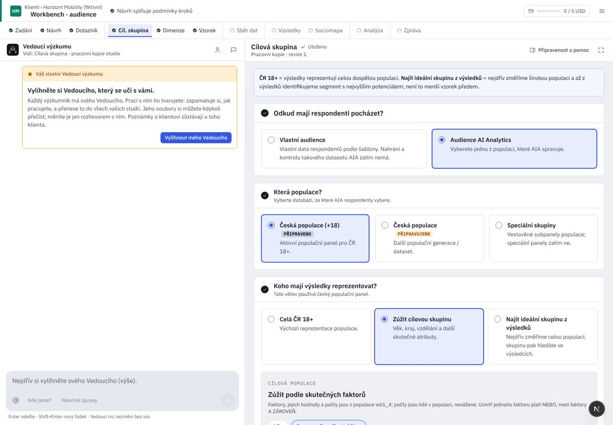

Klienti / Pivovar Zlatá Hora
Vnímání značek ležáků 2026
Hledat nebo spustit…⌘K
Vše
Čeká na vás
Posoudit návrh dotazníku Vnímání značek ležáků 2026 · DotazníkDoplnit rozhodnutí do Zadání Vnímání značek ležáků 2026 · ZadáníZnalosti ke schválení Pivovar Zlatá HoraPravidla Deep Research ke schválení Nastavení · Deep ResearchPřejít
Klienti GKPivovar Zlatá Hora klientVnímání značek ležáků 2026 přehled studie · 2 čekají na vásZnalosti klienta Pivovar Zlatá HoraNastavení GNAkce
Použít jako základ nového výzkumu design této studieNový výzkum u klienta Pivovar Zlatá HoraNPřidat podklady soubory, tabulky, textUAnalyzuj zadání úloha Vedoucího≤ 0,40 USDSpustit výzkum Sběr dat · Kontrola a spuštěníStáhnout zprávu DOCX nebo PDF↑↓ vybratEnter otevřítEsc zavřít? všechny zkratky
0 běží2 čekají
Cílová skupinakrok 4 z 11Čeká na vásNa tomto kroku nic nečekáa 2 na jiném krokuNávrh se změnil od běhu 1 · nový běh na Sběru dat
Vlastní panely a speciální skupiny AIA zatím nemá.
01
Koho mají výsledky reprezentovat?
{{stratNote}}
02
Zúžení
{{filterCount}}samo vybere {{f.alone}} lidí · kliknutím upravíte
Od{{lo}}Do{{hi}}meze populace 18–80
Přidat faktor
{{c.l}}{{c.d}}
V katalogu není „{{q}}“. Panel AIA takový faktor nemá; popište ho slovy v popisu.
{{mismatch}}
Hotové skupiny
03
Proveditelnost
přepočítává se při každé změněV populaci vybráno
{{count}}
lidí z 9 840
Lze vytáhnout
{{feasWord}}
{{feasNote}}
UX kritika · Cílová skupina
Krok říká, koho výsledky reprezentují. Dnes se ptá třikrát na to, co je jedna volba, nabízí cesty, které nikam nevedou, a náhled zastará, když změníte filtr. Kód d5d36b25; R/ = apps/web/src/components/rehome/research/.
Dnes v AIA (workbench, 1440 px)

{{c.l}}{{c.t}}
- {{x.t}}{{x.a}}